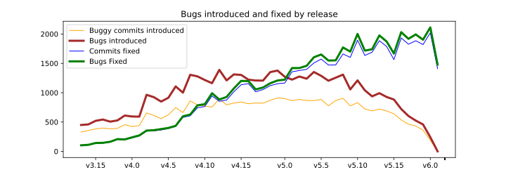
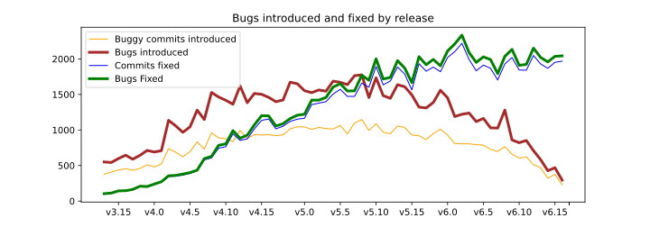

Development statistics for 6.17
Work on 6.17 was contributed by 2,038 developers, of whom 298 made their first kernel contribution during this cycle. The most active contributors this time around were:
Most active 6.17 developers
By changesets Bartosz Golaszewski 207 1.6% Sean Christopherson 168 1.3% Takashi Iwai 162 1.2% Al Viro 141 1.1% Krzysztof Kozlowski 138 1.1% Jakub Kicinski 135 1.0% Eric Biggers 127 1.0% Ian Rogers 121 0.9% Rob Herring 104 0.8% David Lechner 92 0.7% Filipe Manana 90 0.7% Anusha Srivatsa 90 0.7% Jani Nikula 88 0.7% SeongJae Park 87 0.7% Masahiro Yamada 86 0.7% Matthew Wilcox 84 0.6% Alex Deucher 83 0.6% Dmitry Baryshkov 83 0.6% Lad Prabhakar 82 0.6% Binbin Zhou 79 0.6%
By changed lines Dennis Dalessandro 48357 7.8% Takashi Iwai 20562 3.3% Bingbu Cao 16171 2.6% Luca Weiss 12815 2.1% Eric Biggers 12775 2.1% Rob Clark 8666 1.4% Rob Herring 8095 1.3% Ian Rogers 7008 1.1% Liu Ying 6803 1.1% Jakub Kicinski 6489 1.0% Jani Nikula 5739 0.9% Ivan Vecera 5261 0.8% Lorenzo Pieralisi 5158 0.8% Svyatoslav Ryhel 5115 0.8% Frank Li 5074 0.8% Dmitry Baryshkov 4724 0.8% Sean Christopherson 4554 0.7% Andrea della Porta 4531 0.7% Cathy Xu 4378 0.7% Thomas Zimmermann 4240 0.7%
The top contributor of changesets this time around was Bartosz Golaszewski, who carried out some extensive refactoring in the GPIO and pin-control driver subsystems. Sean Christopherson, as always, was busy throughout the KVM subsystem. Takashi Iwai, beyond maintaining the sound subsystem, eliminated large numbers of strcpy() calls there. Al Viro made extensive changes in the virtual filesystem layer (and beyond), and Krzysztof Kozlowski worked mostly with devicetree bindings and system-on-chip drivers.
Dennis Dalessandro only contributed two commits to 6.17, but the one removing the old "qib" Infiniband driver put him at the top of the "lines changed" column. Takashi Iwai reorganized some codec drivers. Bingbu Cao added the IPU7 input system driver to the staging tree, Luca Weiss added a number of drivers for the Milos system-on-chip, and Eric Biggers added a set of tests for cryptographic functions.
In this cycle, 8.1% of the commits carried Tested-by tags, while 53.6% had Reviewed-by tags. The top testers and reviewers for 6.17 were:
Test and review credits in 6.17
Tested-by Daniel Wheeler 96 7.8% Randy Dunlap 46 3.8% Rinitha S 45 3.7% Antonino Maniscalco 42 3.4% Tomi Valkeinen 34 2.8% Neil Armstrong 29 8.7% Vikash Garodia 26 2.1% K Prateek Nayak 26 2.1% Sairaj Kodilkar 23 1.9% Hiago De Franco 21 1.7%
Reviewed-by Simon Horman 237 2.5% Dmitry Baryshkov 180 1.9% Geert Uytterhoeven 154 1.6% Neil Armstrong 147 1.6% Andy Shevchenko 142 1.5% Krzysztof Kozlowski 140 1.5% David Sterba 122 1.3% Ilpo Järvinen 122 1.3% Laurent Pinchart 117 1.3% Andrew Lunn 107 1.1%
Daniel Wheeler remains unapproachable as the top tester of commits going into the kernel. On the review side, Simon Horman managed to review nearly four patches for each day of this development cycle; 31 developers reviewed at least one patch per day during this time.
Employer information
There were 209 employers identified as having supported work on the 6.17 kernel; the most active of those were:
Most active 6.17 employers
By changesets Intel 1313 10.0% (Unknown) 1118 8.5% 1102 8.4% Red Hat 953 7.3% Linaro 679 5.2% SUSE 612 4.7% Meta 517 3.9% AMD 515 3.9% Qualcomm 420 3.2% NVIDIA 416 3.2% (None) 408 3.1% Renesas Electronics 332 2.5% Oracle 293 2.2% Huawei Technologies 273 2.1% Arm 265 2.0% NXP Semiconductors 225 1.7% Linutronix 192 1.5% IBM 176 1.3% (Consultant) 172 1.3% BayLibre 151 1.2%
By lines changed Intel 69817 11.3% Cornelis Networks 48357 7.8% 47540 7.7% (Unknown) 45034 7.3% SUSE 36005 5.8% Red Hat 30886 5.0% Qualcomm 29443 4.8% Meta 23930 3.9% NVIDIA 22106 3.6% Linaro 18498 3.0% AMD 16085 2.6% NXP Semiconductors 15617 2.5% (None) 13361 2.2% Renesas Electronics 13205 2.1% Fairphone 12815 2.1% Arm 12577 2.0% Huawei Technologies 10675 1.7% IBM 10577 1.7% Analog Devices 9147 1.5% Microsoft 6865 1.1%
These results change little from one release to the next. Cornelis Networks is an unusual name to see here, though; sharp-eyed readers will notice that the number of lines changed is exactly equal to that of Dennis Dalessandro, who was mentioned above.
Bugs introduced and fixed
When kernel developers fix a bug, they normally include a Fixes tag that identifies the commit in which the bug was introduced. Among other things, that allows for various types of interesting analysis, including for bug lifetime and such. The 6.17 kernel, for example, fixes 245 bugs that were introduced in 6.16, but also two that have been present since the beginning of the Git era in 2005 (subscribers can consult this KSDB page for lots of details on where the bugs fixed in 6.17 came from).
One specific question that one might attempt to answer with this data is: are kernel developers fixing more bugs than they introduce (thus reducing total bugs) or not? We asked that question nearly three years ago, with a result that looked like this:

At that time, the plot appeared to show that, as of the 5.0 release, the number of bugs fixed exceeded the number introduced, but that result was never expected to match reality. As has often been shown, it takes a long time to find all of the bugs introduced in a release; in 2022, there had not been enough time to find all of the bugs that showed up in 5.0 (released in 2019).
Running the same analysis now produces this plot:

As one might expect, the 5.0 kernel is now shown to have introduced more bugs than it fixed; the apparent crossover point has moved to 5.8. With enough handwaving, one can come up with all kinds of conclusions from this shift. For example, there were 16 kernel releases made between those two plots, but the crossover point only moved by eight, suggesting that it is taking longer to find the requisite number of bugs in any given kernel release, despite the observable fact that we are fixing more bugs in each release over time. If that reasoning holds, there may eventually come a point where we can say with confidence that a given release has fixed more bugs than it introduced.
Another question one can ask is: which commits have required the most fixes over time — which were the buggiest commits ever made to the kernel? As of 6.17, the answer to that question is:
Commit Fixes Description 1da177e4c3f4 657 Linux-2.6.12-rc2 dd08ebf6c352 159 drm/xe: Introduce a new DRM driver for Intel GPUs 8700e3e7c485 79 Soft RoCE driver e126ba97dba9 75 mlx5: Add driver for Mellanox Connect-IB adapters 9d71dd0c7009 58 can: add support of SAE J1939 protocol 46a3df9f9718 54 net: hns3: Add HNS3 Acceleration Engine & Compatibility Layer Support 604326b41a6f 51 bpf, sockmap: convert to generic sk_msg interface d889913205cf 48 wifi: ath12k: driver for Qualcomm Wi-Fi 7 devices 98686cd21624 46 wifi: mt76: mt7996: add driver for MediaTek Wi-Fi 7 (802.11be) devices d5c65159f289 46 ath11k: driver for Qualcomm IEEE 802.11ax devices e7096c131e51 46 net: WireGuard secure network tunnel 1738cd3ed342 44 net: ena: Add a driver for Amazon Elastic Network Adapters (ENA) 76ad4f0ee747 41 net: hns3: Add support of HNS3 Ethernet Driver for hip08 SoC e1eaea46bb40 39 tty: n_gsm line discipline 1e51764a3c2a 38 UBIFS: add new flash file system 1ac5a4047975 37 RDMA/bnxt_re: Add bnxt_re RoCE driver 1c1008c793fa 35 net: bcmgenet: add main driver file 7733f6c32e36 34 usb: cdns3: Add Cadence USB3 DRD Driver 25fdd5933e4c 33 drm/msm: Add SDM845 DPU support 54a611b60590 33 Maple Tree: add new data structure 3d82904559f4 33 usb: cdnsp: cdns3 Add main part of Cadence USBSSP DRD Driver b48c24c2d710 32 RDMA/irdma: Implement device supported verb APIs c09440f7dcb3 31 macsec: introduce IEEE 802.1AE driver c0c050c58d84 31 bnxt_en: New Broadcom ethernet driver. 7724105686e7 29 IB/hfi1: add driver files 4c8ff7095bef 29 f2fs: support data compression 6a98d71daea1 28 RDMA/rtrs: client: main functionality 96518518cc41 27 netfilter: add nftables 3f518509dedc 26 ethernet: Add new driver for Marvell Armada 375 network unit c948b5da6bbe 26 wifi: mt76: mt7925: add Mediatek Wi-Fi7 driver for mt7925 chips e2f34481b24d 26 cifsd: add server-side procedures for SMB3 3c4d7559159b 26 tls: kernel TLS support a49d25364dfb 26 staging/atomisp: Add support for the Intel IPU v2 d2ead1f360e8 25 net/mlx5e: Add kTLS TX HW offload support 726b85487067 25 qla2xxx: Add framework for async fabric discovery 119f5173628a 25 drm/mediatek: Add DRM Driver for Mediatek SoC MT8173. 152d1faf1e2f 25 arm64: dts: qcom: add SC8280XP platform c156633f1353 25 Renesas Ethernet AVB driver proper 44e694958b95 24 drm/xe/display: Implement display support a05829a7222e 24 cfg80211: avoid holding the RTNL when calling the driver
Commit 1da177e4c3f4 is the original commit that started the Git era, so any
bugs seemingly introduced there could have come anytime in the first
14 years of the kernel's development history. As Andrew Morton
recently observed:
"we really blew it that time!
". Perhaps most notable is the
second-place commit, adding the xe graphics driver, which only landed in
the kernel for the 6.8 release and has quickly accumulated Fixes tags.
Beyond that, it remains true that many of the most-fixed commits in the
kernel history come from the networking subsystem, for reasons that are far
from clear.
As of this writing, there are just over 11,300 non-merge commits waiting in
linux-next, which has not been updated for a few days. Those commits will
soon spill into the mainline for the 6.18 release, starting the whole
process over yet again. As always, LWN will be there keeping an eye on
that release as it comes into shape; stay tuned.
| Index entries for this article | |
|---|---|
| Kernel | Releases/6.17 |
Posted Sep 30, 2025 4:35 UTC (Tue)
by alison (subscriber, #63752)
[Link]
Posted Sep 30, 2025 14:43 UTC (Tue)
by iabervon (subscriber, #722)
[Link] (1 responses)
You could reasonably say that the addition of the xe driver broke down the single big bug (of the hardware being entirely unsupported) into a lot of smaller, harder-to-trigger bugs and fixed a lot of test cases while leaving a relatively small number of test cases unaddressed.
Posted Sep 30, 2025 16:29 UTC (Tue)
by npws (subscriber, #168248)
[Link]
Posted Oct 1, 2025 12:20 UTC (Wed)
by error27 (guest, #8346)
[Link]
Also networking is quite big and active.
"many of the most-fixed commits in the kernel history come from the networking subsystem"
Bugs per commit
Bugs per commit
Fixes tags in networking